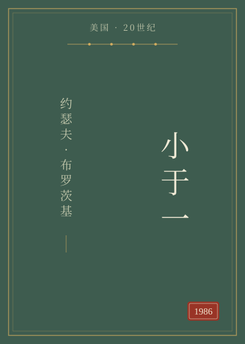
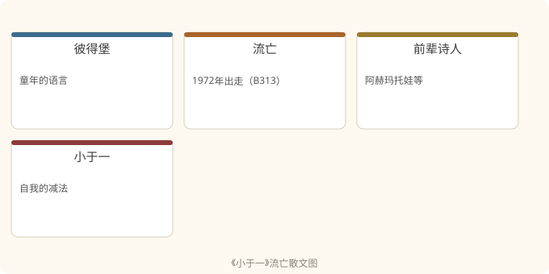

小于一
一、基本信息
| 作者 | 约瑟夫·布罗茨基 |
|---|---|
| 成书/出版 | 1986年（作者页 B313 口径：the essays in Less Than One (1986)） [来源缺失 B313] |
| 国别/地区 | 美国 |
| 时代 | 现当代 · 20世纪 |
| 体裁 | 散文集 |
| 语言 | 英语 |

《小于一》流亡散文图（主题·结构图）
二、创作背景
作者页（B313）：布罗茨基 major works 含'the essays in Less Than One (1986)'（B313 作者页定位）。
作者（B313）：1987年诺奖——'for his important lyric and elegiac poems'；1972年被逐出苏联；美国桂冠诗人1991–92。
三、内容脉络
彼得堡童年、阿赫玛托娃、茨维塔耶娃、Riga？——不：流亡与诗的散文自白（篇目通说待核）。
四、主要人物表
| 人物 | 身份 | 说明 |
|---|---|---|
| 布罗茨基 | 散文作者 | （B313） |
五、主题与艺术特点
- 流亡与语言（通说待核）。
- 诗人的前辈（阿赫玛托娃等——通说待核）。
- '小于一'：自我的减法（通说待核）。
六、影响与评论
- 作者页：布罗茨基散文代表作（B313 作者页口径）。
[来源缺失 B313] - 作者页：1987年诺奖——'lyric and elegiac poems'（B313 作者级）。
[来源缺失 B313]
七、阅读建议
难点
- 散文的诗性密度。
- 俄苏文学史背景。
- 《小于一》（浙江大学出版社/上海译文版本，通说待核）。
- 英文原版（Farrar, Straus）。
布罗茨基散文首选。
八、待核实
- 篇目（ Less Than One/Praise of Boredom 等）核对。
- 1986年出版（Farrar, Straus and Giroux说）核对。
- '诗歌是语言的最高的存在形式'说待核。
本页主要来源
- [来源缺失 B313]
约瑟夫·布罗茨基的其他收录作品：小于一